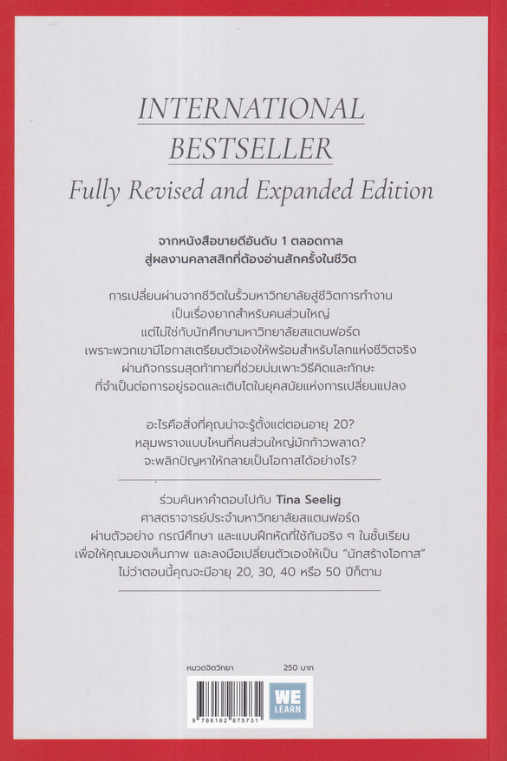

What I Wish I Knew When I Was 20
เขียนโดย Tina Seelig
ทำไมต้องอ่าน What I Wish I Knew When I Was 20 (น่าจะรู้อย่างนี้ตั้งแต่ตอนอายุ 20) ?
การอ่าน “What I Wish I Knew When I Was 20 (น่าจะรู้อย่างนี้ตั้งแต่ตอนอายุ 20)” โดย Tina Seelig เป็นการลงทุนที่คุ้มค่าเพราะ:
ิ
1. เรียนรู้จากประสบการณ์: ผู้เขียนแชร์บทเรียนชีวิตที่สำคัญจากประสบการณ์ของเธอ ทำให้ผู้อ่านไม่ต้องเผชิญกับความผิดพลาดเดียวกัน
2. มุมมองใหม่: หนังสือช่วยเปลี่ยนมุมมองเกี่ยวกับความสำเร็จ ความล้มเหลว และการเรียนรู้ ซึ่งมีประโยชน์ต่อการเติบโตส่วนบุคคล
3. การพัฒนาทักษะ: มีเคล็ดลับและกลยุทธ์ในการพัฒนาทักษะต่าง ๆ เช่น การคิดเชิงสร้างสรรค์ การแก้ปัญหา และการสื่อสาร
4. สร้างแรงบันดาลใจ: ช่วยกระตุ้นให้ผู้อ่านกล้าที่จะคิดใหญ่และทำตามความฝัน โดยเฉพาะในช่วงวัยที่เต็มไปด้วยความเปลี่ยนแปลง
5. การเตรียมตัวสำหรับอนาคต: เป็นแนวทางในการวางแผนอนาคตและการทำความเข้าใจถึงทางเลือกในชีวิตที่มีอยู่
หนังสือเล่มนี้มีข้อมูลที่เป็นประโยชน์ มีการเรียนรู้วิธีการคิด การใช้ชีวิต การมองโลกในแง่ดี และเป็นแรงบันดาลใจให้ผู้อ่านกล้าที่จะทำตามความฝันและสร้างอนาคตที่ตนเองต้องการ!
“What I Wish I Knew When I Was 20 (น่าจะรู้อย่างนี้ตั้งแต่ตอนอายุ 20)” เขียนโดย Tina Seelig เป็นหนังสือที่เต็มไปด้วยคำแนะนำและบทเรียนชีวิตที่สำคัญสำหรับคนในช่วงวัย 20 ต้น ๆ โดยเฉพาะอย่างยิ่งนักศึกษาและผู้เริ่มต้นทำงาน
ในหนังสือเล่มนี้ ผู้เขียนแชร์ประสบการณ์และความรู้ที่เธอสะสมมา ซึ่งมีเป้าหมายเพื่อช่วยให้ผู้อ่านเข้าใจ:
การเรียนรู้การเติบโต: วัย 20 เป็นช่วงเวลาที่สำคัญในการพัฒนาตนเองและค้นหาสิ่งที่คุณสนใจ
การเรียนรู้จากความล้มเหลว: การล้มเหลวไม่ใช่จุดจบ แต่เป็นโอกาสในการเรียนรู้และเติบโต
การสร้างความสัมพันธ์: การสร้างสัมพันธ์และการสื่อสารที่ดีมีความสำคัญในการประสบความสำเร็จในชีวิต
การคิดเชิงสร้างสรรค์: สนับสนุนให้ผู้อ่านพัฒนาความคิดสร้างสรรค์และมองหาโอกาสในทุกสถานการณ์
การวางแผนอนาคต: ช่วยให้ผู้อ่านคิดถึงเป้าหมายในชีวิตและการวางแผนเพื่อไปให้ถึงเป้าหมายที่วางไว้
โดยรวมแล้ว หนังสือเล่มนี้มีข้อมูลที่เป็นประโยชน์และการมองโลกในแง่ดี เป็นแรงบันดาลใจให้ผู้อ่านกล้าที่จะทำตามความฝันและสร้างอนาคตที่ต้องการ
"เคล็ดลับพัฒนาความคิดและพลิกปัญหาให้เป็นโอกาส...ส่งตรงจากรั้วสแตนฟอร์ด" จากหนังสือขายดีอันดับ 1 ตลอดกาล สู่ผลงานคลาสสิกที่ต้องอ่านสักครั้งในชีวิต
การเปลี่ยนผ่านจากชีวิตในรั้วมหาวิทยาลัยสู่ชีวิตการทำงาน เป็นเรื่องยากสำหรับคนส่วนใหญ่ แต่ไม่ใช่กับนักศึกษามหาวิทยาลัยสแตนฟอร์ด เพราะพวกเขามีโอกาสเตรียมตัวเองให้พร้อมสำหรับโลกแห่งชีวิตจริง
ผ่านกิจกรรมสุดท้าทายที่ช่วยบ่มเพาะวิธีคิดและทักษะ ที่จำเป็นต่อการอยู่รอดและเติบโตในยุคสมัยแห่งการเปลี่ยนแปลง
อะไรคือสิ่งที่คุณน่าจะรู้ตั้งแต่ตอนอายุ 20? หลุมพรางแบบไหนที่คนส่วนใหญ่มักก้าวพลาด? จะพลิกปัญหาให้กลายเป็นโอกาสได้อย่างไร?
ร่วมค้นหาคำตอบไปกับ "Tina Seelig" ศาสตราจารย์ประจำมหาวิทยาลัยสแตนฟอร์ด ผ่านตัวอย่าง กรณีศึกษา และแบบฝึกหัดที่ใช้กันจริง ๆ ในชั้นเรียน เพื่อให้คุณมองเห็นภาพ และลงมือเปลี่ยนตัวเองให้เป็น "นักสร้างโอกาส" ไม่ว่าตอนนี้คุณจะมีอายุ 20, 30, 40 หรือ 50 ปีก็ตาม
หนังสือที่คุณอาจสนใจ